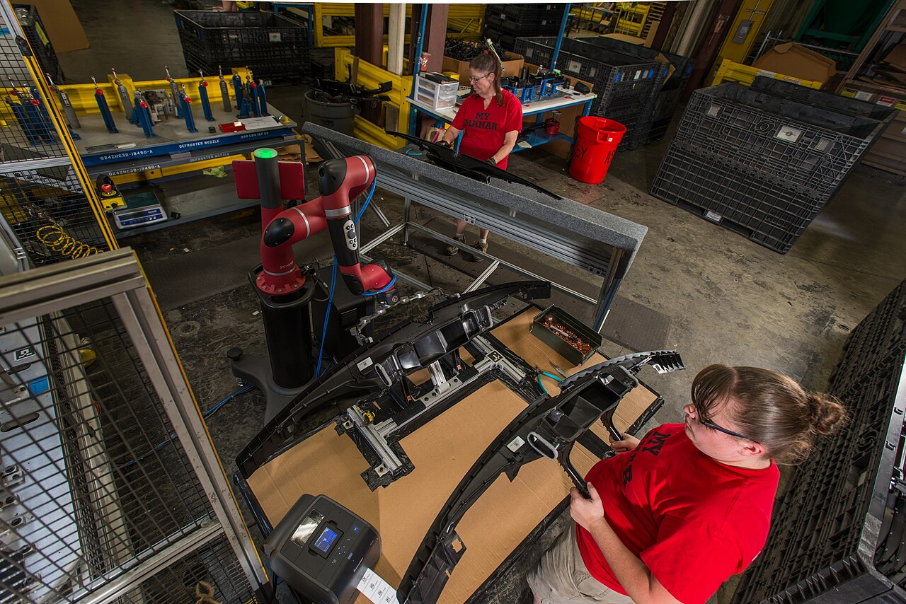

INTELLIGENCE → PRODUCTIVITY / FIELD NOTE 026
AI 如何成为
新质生产力？
从一个人的任务，到一条产业链，再到能源与社会系统。追踪智能技术如何进入真实生产，并检验它带来的增量、代价与成立条件。
覆盖最新已发布数据
协同增量
技术进入生产，
改变的是组合方式。
01 — THE ENGINE
生产力不是一个
单点数字
AI 要形成生产力，必须进入任务与流程。点亮节点，沿着这条作用链查看它怎样改变生产，以及结果需要哪些条件。
02 — TRANSMISSION CONDITIONS
模型能力，怎样变成
可持续的生产力？
新质生产力关心劳动者、劳动资料和劳动对象怎样重新组合。试着开启或关闭五项条件，观察哪一环会阻断“技术能力 → 有效产出”的转化。这里是解释性模型，不是统计预测。
从重复处理转向目标设定、专业判断和人机协作。
模型、算力、传感器与机器人扩展生产工具。
数据与知识成为可重组的工作材料，也催生新问题。
需联合观察效率、质量、创新与资源成本；本站没有直接测算全要素生产率。
能力已接入，
转化尚未完成
数据、技能与流程已连接，但质量治理和资源效率还未纳入。此时可能出现速度提升，却无法确认结果是否可靠、可持续。
下一道门：可靠性与责任用情景实验检验时间成本 ↗解释规则：五项条件是分析框架，开关不代表真实企业的达标情况，也不会生成虚构的“生产力得分”。
03 — ZOOM LENS
从一项任务，
缩放到一个系统
同一项智能能力，在不同尺度上的作用方式不同。选择一个尺度，观察生产关系怎样变化。
MICRO · WORK UNIT
AI 先改变
一个具体任务
在写作、分析、检索、编程等知识任务中，AI 能压缩起草与搜索时间，也可能增加核验成本。个人层面的关键不是“用了 AI”，而是把时间释放到判断、沟通与创造上。
每小时解决问题数平均提升
结果越惊人，
越要问证据来自哪里。
04 — TASK-LEVEL EVIDENCE
把“提升”拆开：
在哪一步发生？
不同任务的产出指标不一样。选择一个案例，沿工作链查看 AI 介入点、人的复核位置和研究真正测量了什么。下方指数只在各案例内部以原流程 = 100 归一化，不能跨行业排名。
一项覆盖 5,179 名客服人员的现场研究。平均增幅为 14%；新手和低技能员工约为 34%，资深员工影响较小。
客户提出的问题需要理解情境、检索知识，再生成可执行的答复。
这是单一客服工作场景的平均结果。不能推断所有企业或所有任务都会提高 14%。
Stanford《2026 AI Index》汇总不同任务研究：客户支持约 14%–15%、软件开发 26%、营销产出 50%。不同研究的任务、样本和产出定义不同，图中不会把它们合并为一个平均数。
05 — FRONTIER OF DISCOVERY
生产力的意义，
还包括发现新知识
AI 不只压缩已有任务的时间，也可能改变科研、预测与实验的组织方式。三个信号分别讲“扩散”“速度”和“可靠性”，它们不是一个统一分数。
生成 60 天全球预测
8–60× 快于先前方法同一端到端科研任务基准，差距仍明显
更多研究使用 AI，
但数量不是发现质量。
自然科学中的 AI 相关论文约 80,150 篇，较 2024 年增长 26%。它说明工具与方法正在扩散，不能单独证明科学发现的质量或原创性同步提高。
06 — 2026 EVIDENCE SIGNALS
扩散很快。
重组还在路上。
最新调查显示，组织接触 AI 已很普遍，Agent 真正进入业务职能的比例仍低。读图时请分清“采用”与“结果”。
采用不等于转型。 工具已进入许多组织，端到端 Agent 工作流仍处在早期。新的生产力跃迁，可能发生在“重新设计流程”这一步。
SIGNAL 02 / 04ADOPTION / TIME SERIES
三年之间，
AI 从试验走向常态
选择年份，沿曲线追踪受访组织的 AI 使用比例。调查口径反映采用情况，不表示已实现相同比例的生产率增长。
超过半数的受访组织表示使用 AI。
劳动变化：已发生什么，未来担心什么？
Stanford 2026 AI Index 报告称，美国 22–25 岁软件开发者就业人数较 2024 年下降近 20%。这是值得观察的就业趋势，不能单独证明变化由 AI 导致。
同一报告也指出，总体就业数据尚未出现大规模岗位流失。复杂的技术也会产生简单的体验。衡量新质生产力，要看任务质量、产出速度、资源效率和人的能力是否一起改善。
一边是产线，
另一边是能源账单。
07 — PHYSICAL INTELLIGENCE
智能，正在
走出屏幕
实体产业是生产力变化的重要现场。工业机器人把感知、控制和执行带入工厂；服务机器人则进一步走进物流、医疗与商业服务。
同比增长 9%
服务机器人出货增长
2025 年全球接近 25 万台
IFR World Robotics 2026 · Service Robots
机器人部署说明生产工具正在扩展，不能单独证明所有岗位产出提升。真正的结果还取决于工艺适配、员工技能、设备利用率和价值分配。
FIELD OBSERVER / REAL SITES
把目光移到
真实生产现场

现场照片仅用于解释工作场景；网站中的 IFR 统计是全球汇总，不能从单张照片推断其规模或效果。
08 — THE RESOURCE LEDGER
每一次智能，
也有它的能量账单
AI 依赖数据中心与计算设施。效率提升与能源需求需要放在同一张账上，绿色生产力关注的是单位资源创造的价值。
2025 · 估计数据中心用电约 485 TWh；包含 AI 与其他数字服务。
看不见的计算，
依赖看得见的设施。
服务器、网络和运维人员共同维持模型运行。图像展示数据中心基础设施；旁边的用电预测是 IEA 对全球数据中心的估计与展望。
图像：Derrick Coetzee，CC0 · Wikimedia Commons改变一个参数，
重新判断效率的价值。
09 — PRODUCTIVITY LAB / SIMULATION
如果 AI 进入
你的工作流
调节任务规模、AI 覆盖率、节时幅度和复核负担。看看可释放的时间如何变化。所有输入都是可编辑假设，输出是情景模拟，不是对某个行业的预测。
净释放工时 = 月基准工时 × 覆盖率 × [节时比例 − 复核比例 − (返工概率 × 单次返工耗时比例)]。单次返工耗时假设为原任务的一半；这是用户可调的情景模型。
在当前假设下，AI 辅助释放部分时间；质量仍需人工验证。
ⓘ 这是透明的算术情景，返工概率与单次返工耗时由假设决定；尚未纳入行业差异、能源成本和结果质量。时间释放不自动等于有效产出提升。
THE PRODUCTIVITY THESIS
生产力跃迁，
要让技术进入关系之中
数据、算力和模型构成新的能力基础；人和机器重新分工，工作流程重新设计，组织才能把能力变为成果。成果还要经得起质量、能源、公平与安全的检验。
SOURCE TRANSPARENCY
每一个数字，
都能找到来处。
发布时间与数据年份分别标注。采用率、机器人部署量、任务实验和能源预测属于不同证据，读图时请勿混作同一结论。